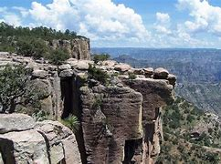
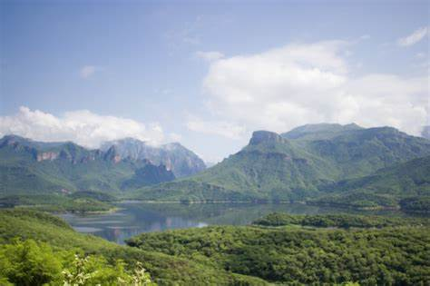
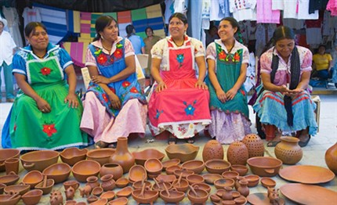
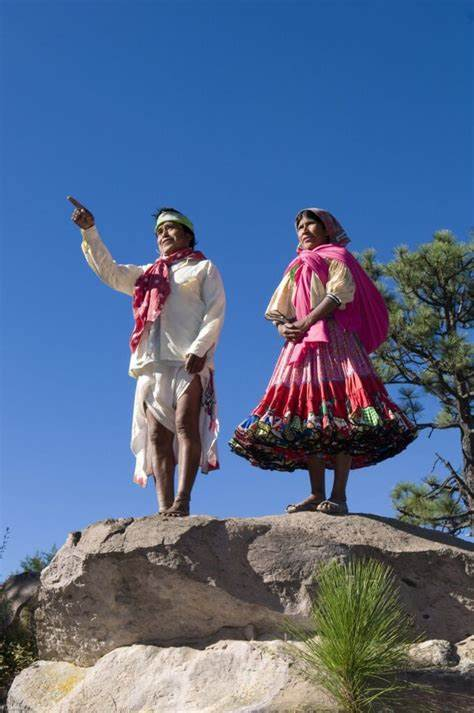
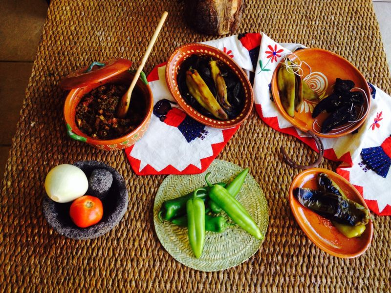

Los rarámuri, llamados tarahumaras por los españoles, son un pueblo indígena con una historia de resistencia y adaptación.
Se cree que migraron desde el suroeste de los Estados Unidos hacia la Sierra Tarahumara, estableciéndose en
esta zona montañosa antes de la llegada de los conquistadores españoles.
Durante la colonización, los tarahumaras fueron sometidos a evangelización y explotación
en minas de plata, pero muchos huyeron a regiones más inaccesibles para preservar su cultura.
Actualmente, continúan defendiendo su identidad frente a problemas como la expansión de la tala,
narcotráfico y pobreza extrema.
Ubicación y Territorio
La Sierra Tarahumara es una región montañosab> del estado de Chihuahua,
famosa por su difícil acceso y sus impresionantes barrancas, como la Barranca del Cobre,
que es más grande y profunda que el Gran Cañón de EE.UU.
🌍 Principales municipios donde habitan:
Guachochi
Batopilas
Urique
Bocoyna
Carichí
Morelos
Uruachi

🌿 Ecosistema:

Bosques de pinos y encinos en las alturas.
Clima frío en invierno y cálido en verano.
Profundas barrancas con ríos y cascadas
Lengua y Cultura
El rarámuri es una lengua de la familia uto-azteca y se ha mantenido viva a pesar de la influencia
del español. Sin embargo, el número de hablantes ha disminuido debido a la migración y la falta
de apoyo en educación bilingüe.
Los rarámuri creen en una conexión espiritual con la naturaleza, y su cosmovisión está
ligada a la tierra, el sol y la luna. Mezclan creencias indígenas con el cristianismo
introducido por los misioneros jesuitas.
🔹 Expresiones en rarámuri:
"Rarámuri" → Los de los pies ligeros (nombre con el que se identifican).
"Kórima" → Principio de ayuda mutua, compartir sin esperar nada a cambio.
"Napawika" → Gracias.
Tradiciones y Costumbres
Las tradiciones y costumbres del pueblo tarahumara (rarámuri) son una parte fundamental de su
identidad y cosmovisión. A lo largo de los siglos, los rarámuri han mantenido un profundo vínculo
con la naturaleza y el universo, lo cual se refleja en sus prácticas religiosas, festividades y
formas de vida. Sus rituales, danzas, música y celebraciones son expresiones de gratitud hacia la
tierra y sus elementos, además de ser un medio para transmitir su cultura a las nuevas generaciones.
Las festividades y tradiciones rarámuris no solo celebran la vida en comunidad, sino que también
son una forma de resistir los cambios y adaptarse a los tiempos sin perder sus raíces. La danza,
la música y los alimentos tradicionales juegan un papel crucial en el fortalecimiento de sus lazos
sociales y espirituales, garantizando la preservación de sus conocimientos ancestrales.
Fiestas importantes:

Yúmari: Ritual de agradecimiento por la cosecha.
Norirúachi: Celebración religiosa con danzas y ofrendas.
Semana Santa Tarahumara: Fiesta donde mezclan rituales indígenas y católicos, con música y danzas tradicionales.
Danzas y Música:
Danza del Matachín: Influenciada por los jesuitas, se baila en festividades religiosas.
Danza Pascola: Interpretación de la lucha entre el bien y el mal..
Instrumentos: Utilizan tambores de cuero, violines y flautas de carrizo.

Gastronomía tradicional:

Pinole:Harina de maíz tostado, su principal alimento.
Tesgüino:Bebida fermentada de maíz usada en ceremonias.
Quelites y frijoles:Base de su dieta junto con tortillas
Mapa Interactivo de Cómo llegar
Ubicación: La Sierra Tarahumara se encuentra en el suroeste de Chihuahua.
Lugares de Interés Cercanos: Barranca del Cobre, Cascada de Basaseachic, Pueblo mágico de Creel.